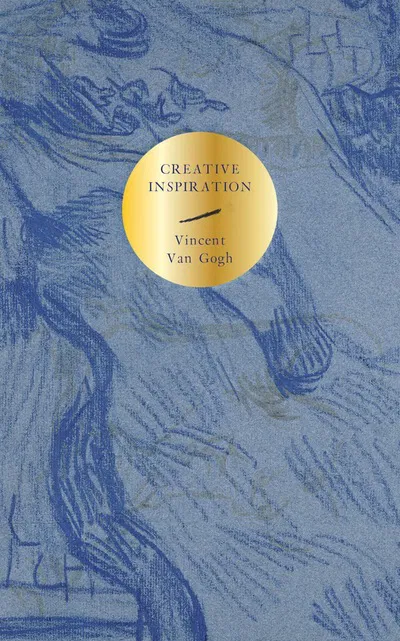

"Anyway, it's not a bad idea for you to want to become an artist, because if one has fire in one, and soul, one can't keep stifling them and - one would rather burn than suffocate. What's inside must get out."

'Each quote was selected from Van Gogh's letters, which are curated and translated from Dutch and French to English by the Van Gogh Letters Project. The Collection contains all Van Gogh's surviving correspondence — 1,750 letters written and received between 1853 and 1890. The majority were written by Vincent to his beloved brother Theo and thanks to Theo, the great collector of the family, they have survived.'
Editor's Note
Why Create?
" …I'm an artist … those words naturally imply always seeking without ever fully finding. It's the exact opposite of saying, 'I know it already, I've already found it.' To the best of my knowledge, those mean 'I seek, I pursue, my heart is in it.'"
"I know no better definition of the word Art than this “Art is man added to nature”, nature reality truth, but with a meaning, with an interpretation, with a character that the artist brings out and to which he gives expression, which he sets free, which he unravels, releases, elucidates."
" … we're working at an art, at matters that won't be of our times only but which may also be continued by others after us."
"This morning I still have a lot of work to do, I see that it isn't easy and will no doubt become much more difficult, yet have unfaltering hope that I'll succeed, and I'm also convinced that I'll learn to work by working, and that my work will become better and more substantial."
"Through working hard, old chap, I hope to make something good one day. I haven't got it yet, but I'm hunting it and fighting for it, I want something serious, something fresh — something with soul in it! Onward, onward."
" … we have in common a liking for seeing behind the scenes or, in other words, are inclined to analyze things. Now this, I believe, is exactly the quality one must have in order to paint … It may be that there has to be something innate in us, to some extent … but above all, above all, it's only later that the artistic sense develops and ripens through working."
Daily Work
Process
"One becomes a painter by painting."
"Do you get up early? I do regularly, it's good to make a habit of it. It's precious and already very dear to me, that early morning twilight."
"You don't know how paralyzing it is, that stare from a blank canvas that says to the painter you can't do anything. The canvas has an idiotic stare, and mesmerizes some painters so that they turn into idiots themselves.
Many painters are afraid of the blank canvas, but the blank canvas is afraid of the truly passionate painter who dares — and who has once broken the spell of "you can't.'"
If one truly loves nature one finds beauty everywhere.
"What I think is the best life, oh without even the slightest shadow of a doubt, is a life made up of long years of being in touch with nature out of doors — and with the something on high — unfathomable, 'awfully Unnameable,' because one can't find a name for it — above that nature."
" … nature like this can sometimes awaken in a mind things that would otherwise never have woken."
On Humanity
"I feel that my work lies in the heart of the people, that I must keep close to the ground, that I must delve deeply into life and must get ahead by coping with great cares and difficulties."
"… I'd rather paint people's eyes than cathedrals, for there's something in the eyes that isn't in the cathedral — although it's solemn and although it's impressive — to my mind the soul of a person … is more interesting."
"You see, I really have wanted to make it so that people get the idea that these folk, who are eating their potatoes by the light of their little lamp, have tilled the earth themselves with these hands they are putting in the dish, and so it speaks of manual labour and — that they have thus honestly earned their food. I wanted it to give the idea of a wholly different way of life from ours — civilized people. So I certainly don't want everyone just to admire it or approve of it without knowing why."
The difficulties one faces in the first place gives the studies a painful quality at times.
I don't regard this as something that discourages me, though, because I've noticed it in others as much as myself, and in them it has increasingly gone away of its own accord.
And work remains difficult at times throughout one's life, I believe, but not always with so few results as in the beginning.
"If something in you yourself says 'you aren't a painter' — it's then that you should paint> …"
"Dear brother, don't think of me as being anything other than an ordinary painter facing ordinary problems, and don't imagine there's anything unusual when there are hard times. I mean, don't picture the future either black or brightly lit; you'll do better to go on believing in grey."
Doubt
Signs of Progress
"I feel a power in me that I must develop, a fire that I may not put out but must fan, although I don't know to what outcome it will lead me …"
" … at the time I was half despairing: will I ever succeed in making what I consider so beautiful? Now I'm no longer so despairing, now I can capture those peasants and women better than then, and through carrying on working patiently I can arrive at what I wanted, in a sense."
"For the great doesn't happen through impulse alone, and is a succession of little things that are brought together."
Inspiration
"I believe so strongly in your artistic ability that to me you'll be an artist as soon as you pick up a brush or a piece of chalk and, clumsily or not clumsily, make something."
"Let's make the most of the time, because wasting time is the most expensive thing of all."
"We must treat the world with so much good heart, so much energy, so much coolness, not taking things too hard …"
"And love is something eternal, it changes its aspect but not its foundation. And there's the same difference between someone who loves and the same man before as between a lamp that is lit and one that isn't."
"Come on, old chap, come and paint with me on the heath, in the potato field, come and walk with me behind the plough and the shepherd — come and stare into the fire with me — just let the storm that blows across the heath blow through you. Break out. I don't know the future, how it could be different or not, whether everything will go well for us. But all the same I can't speak otherwise. Don't look for it in Paris, don't look for it in America, it's all the same, always exactly the same. Change indeed, look for it on the heath."